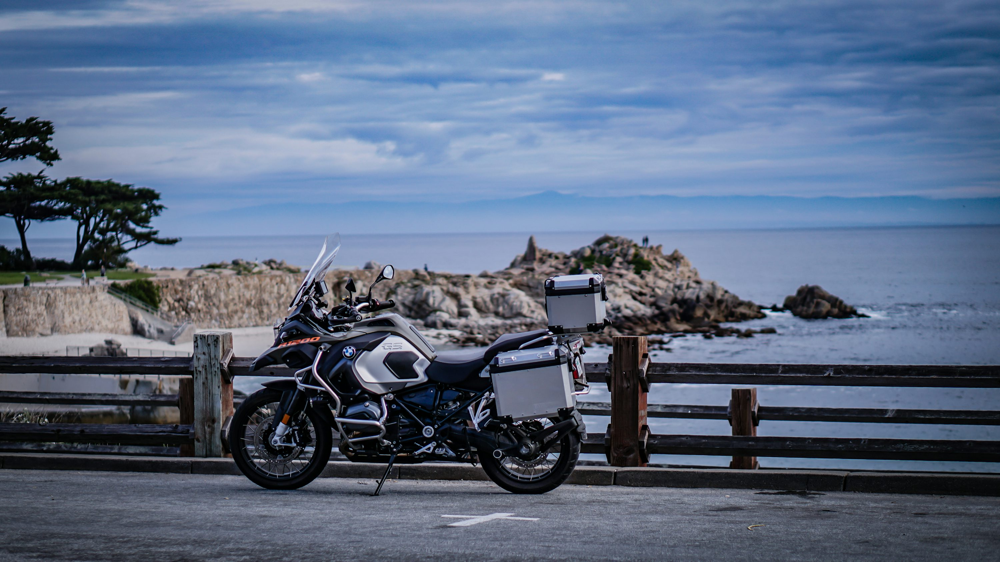

Desde su fundación en 1923, BMW Motorrad ha sido sinónimo de innovación, calidad y pasión por las motocicletas. Acompáñanos a explorar la rica historia de esta icónica marca alemana.
La historia de BMW Motorrad comienza en 1923 con el lanzamiento de la icónica BMW R32. Fue la primera motocicleta en usar el famoso motor bóxer de dos cilindros opuestos, un diseño que sigue presente hoy. Su innovación en el sistema de transmisión por eje cardán revolucionó la industria.
A lo largo del siglo XX, BMW desarrolló motos legendarias como la R75, usada durante la Segunda Guerra Mundial, y más adelante modelos de alto rendimiento para uso civil. En los años 70, BMW apostó por la seguridad y el confort, incorporando suspensión avanzada y sistemas de frenos innovadores.
Con la llegada de la S1000RR en 2009, BMW entró de lleno en el mundo de las superbikes. Este modelo combinó potencia extrema con electrónica de punta, incluyendo modos de conducción, ABS de competición y control de tracción. Desde entonces, BMW ha dominado en pista y en carretera.

Actualmente, BMW apuesta por un futuro más verde con modelos eléctricos como la BMW CE 04. La marca continúa siendo un referente global gracias a su mezcla de tecnología, diseño, y compromiso ambiental.